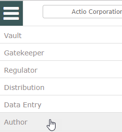
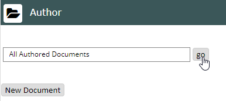
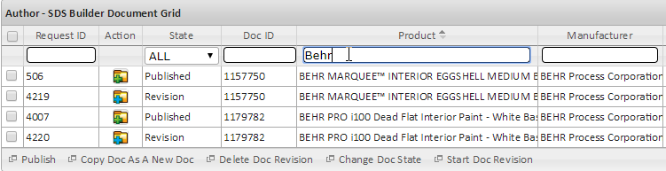
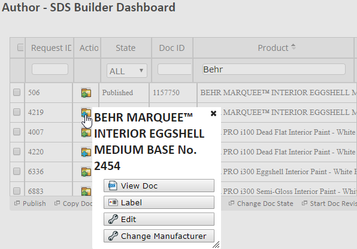
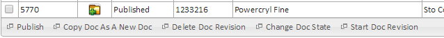
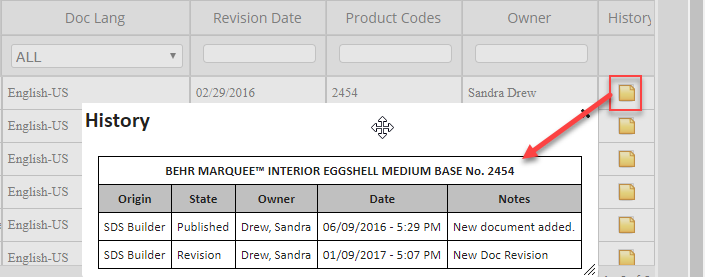

The Author module is an application for creating safety data sheets (SDSs) and other documents. With Author you can create, edit, revise, and publish SDS.
Author supports two types of users: administrators and general users, with the following privileges:
Administrator: Create, edit, approve, and publish documents. You can also change the state of a document to rejected, approved, review, or discontinued.
General Users: Create and edit documents, and change the state of a document to review state. General users cannot approve or publish documents.
To access Author:
Select the menu button and select Author.

The documents search is displayed. To view all authored documents, click Go.
Alternately, you can search for documents by pre-configured categories. Select the search box and select a category (if any are onfigured).

The document table is displayed.
You can search for documents using the text boxes in the column headers. Enter the value to search for, then press Enter.

Sort documents by any column by clicking the column header.
You can also reorder the columns by dragging them to new positions in the grid.
The following information columns are shown in the grid:
Request ID—The request identifier (this column does not sort).
Action—Click the icon to see the Action menu where you can select an option. Depending on the document state, the following options may be available: View Doc, Label, Edit, Revise, Change Manufacturer

The toolbar on the bottom shows additional actions that may be taken by first selecting the document checkbox in the first column.

Options are: Publish, Copy Doc As A New Doc, Delete Doc Revision, Change Doc State, Start Doc Revision
State—The current state of the document. May be: Draft, Review, Approved, Published, Revision, Discontinued. The Action icon also indicates the state of the document (green for Published, blue for Revision, white for Draft, black for Discontinued).
Doc ID—The document ID.
Product—The product name.
Manufacturer—The product manufacturer.
Manufacturer MSDS Number—The MSDS number (if any) specifed when the document was initially created.
Doc Type—The document format specified when created (i.e. GHS).
Doc Lang—The language specified when created. Note: The system does not translate the document.
Revision Date—The date the document revision was created.
Product Codes—The product code(s) specified when the document was initially added.
Owner—The user who created the document.
History—A running log listing activity for the document. Click the icon to see the document history:
